Chapter 7: Side Reactions on Amino Groups in Peptide Synthesis
（氨基上的副反应）
氨基是多肽合成中最通用的亲核试剂。由于其高反应性，氨基在合成过程中可能发生多种副反应，最常见的包括：乙酰化、三氟乙酰化、甲酰化和烷基化。这些副反应可发生在Nα脱保护、氨基酸偶联、侧链全局脱保护、Nα保护以及色谱纯化等步骤。
乙酰化是SPPS中常见的副反应，导致肽链终止和截短肽杂质的形成。 乙酰化来源： 1. 有意的乙酸酐/吡啶封端处理：残留的乙酸酐可能存活过树脂洗涤步骤 2. His残基介导的乙酰基迁移：His(Tos)过早脱保护→Ac-咪唑化物→Ac从Nim→Nα迁移终止肽链 也可发生Ac Nim→Lys-Nε迁移 3. Arg胍基的乙酰化：单保护Arg(Tos)/Arg(NO₂)易受影响，但Arg(Pbf)有足够空间位阻 4. 原料中残留乙酸/乙酸乙酯：在困难偶联（动力学慢）时竞争反应加剧 5. 过度乙酰化：N-乙酰乙酰胺衍生物（双重乙酰化） 抑制策略： - 严格控制原料中乙酸/乙酸乙酯含量（冻干、重结晶去除） - 降低乙酸酐化学计量、降温、缩短反应时间 - 用较弱碱（吡啶）替代三乙胺
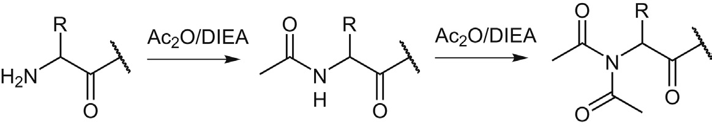
Figure 7.1 肽Nα过度乙酰化副反应
三氟乙酰化比乙酰化更常见。TFA与Nα或Ser/Thr/Tyr羟基反应，生成三氟乙酰胺或三氟乙酸酯（分子量增加96 Da）。 三氟乙酰化的来源和场景：
- 从固相载体切肽时大量TFA参与 - 如果TFA未充分去除，在片段缩合中TFA被活化与氨基组分反应 - 导致三氟乙酰化副产物4与目标产物3同时生成 解决方案： - 用吡啶/DIEA中和过量TFA - 盐交换为非反应性阴离子（如Cl⁻） - 用HFIP/TFE替代TFA从CTC树脂切肽 - 用HCl/二氧六环替代TFA脱Boc
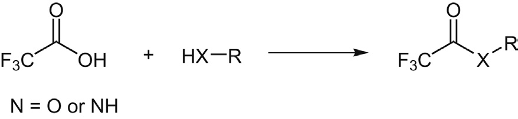
Figure 7.2 羟基和氨基上的三氟乙酰化
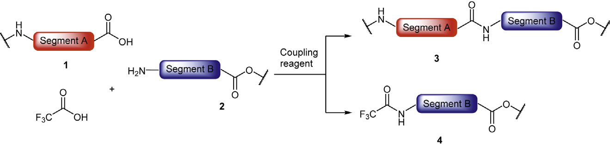
Figure 7.3 片段缩合中肽Nα-三氟乙酰化副反应
- Boc化学中，羟甲基树脂（如Wang树脂）的羟基与TFA酯化 - DIEA中和时发生酰基O→N迁移，三氟乙酰基从树脂转移到肽Nα - N端Pro尤其容易发生（仲胺亲核性强，pKa高） 抑制策略： - 用Fmoc-Pro-OH替换为Boc-Pro-OH（酸解时暂时形成氨基甲酸酯保护N端Pro） - 使用酸稳定性更强的羟甲基-Pam树脂 - 缩短碱中和时间
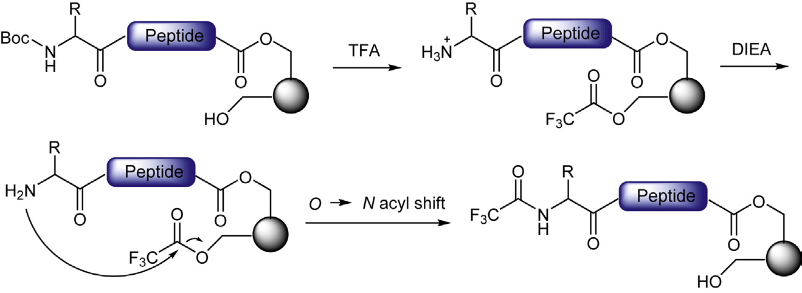
Figure 7.4 羟甲基树脂上酰基O→N迁移诱导的三氟乙酰化
- N端Ser/Thr的侧链羟基被TFA酯化 - 后续碱性处理时发生酰基O→N迁移 - 三氟乙酰基从Ser/Thr侧链转移到Nα - 内部Ser/Thr的三氟乙酰化可通过水解逆转，但N端位置更持久 控制措施： - 控制全局脱保护时间（时间越长越严重） - 降低TFA浓度 - 降低反应温度
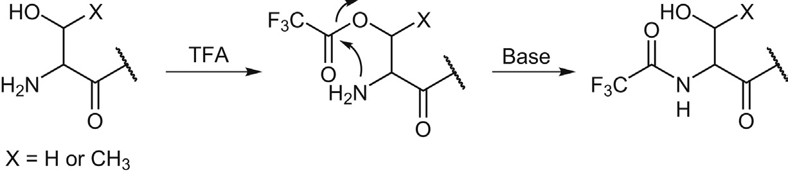
Figure 7.5 N端Ser/Thr诱导的Nα-三氟乙酰化
甲酰化来源：(1) Trp(For)保护基；(2) 甲酸；(3) DMF溶剂杂质 最易受影响的官能团：Trp吲哚侧链、Nα、Lys-Nε、His-Nim、Ser/Thr羟基
- Boc化学中Trp常用甲酰保护（Trp(For)），具有极高酸稳定性甚至抗HF - HF/EDT或HF/2-巯基乙醇通过"推-拉"机理去除 - 碱性条件（肼、NaOH、NaHCO₃、哌啶/DMF）也可去除 - 去除不完全→残留Trp(For)（分子量增加28 Da） - 碱法脱保护时，释放的甲酰基可能修饰Lys-Nε或Nα 解决方案： - 使用N,N'-二甲基乙二胺作为碱和甲酰淬灭剂 - 可在再生Trp的同时将甲酰基转化为N-甲酰-N,N'-二甲基乙二胺
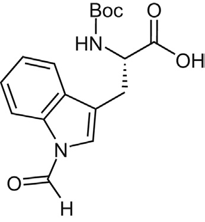
Figure 7.6 Boc-Trp(For)-OH结构
- HCl/甲酸用于Boc脱保护：可导致Trp侧链甲酰化（可逆） - 酰基肼氧化为酰基叠氮时以甲酸作催化剂：导致肼甲酰化 - CNBr降解（70%甲酸缓冲液）和-Asp-Pro-酸解（甲酸）中均可发生 - 液相色谱纯化中0.1%甲酸作为流动相：浓缩后浓度升高加剧甲酰化 注意：甲酸在0.1%浓度通常不会引起严重问题，但RP-HPLC组分浓缩后风险增大 1M HCl处理可水解Nα-甲酰化产物（但可能导致肽酸解）
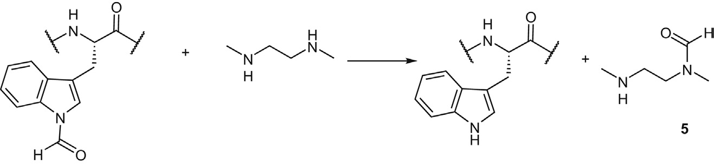
Figure 7.7 N,N'-二甲基乙二胺介导Trp(For)脱保护
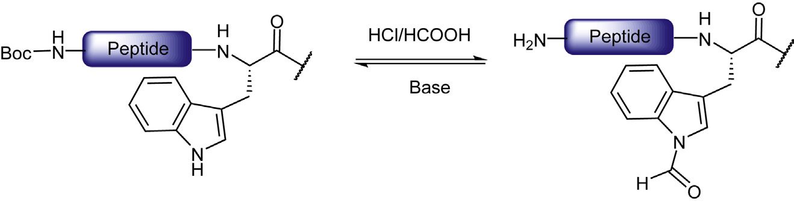
Figure 7.8 HCl/HCOOH在Nα-Boc脱保护步骤诱导Trp侧链甲酰化
DMF是最常用的有机溶剂之一，但可能通过多种途径引起甲酰化： 1. DMF降解产生甲酸：强酸/强碱/高温条件下水解 游离甲酸被偶联试剂活化后与氨基竞争反应 2. DMF直接通过转酰胺化引起甲酰化： - 室温DMF/Oxyma过夜→约2% Nα-甲酰化 - 80°C微波10 min→48% 甲酰化！ - NMP中无此问题 3. Vilsmeier-Haack型反应： - DMF+POCl₃/氯甲酸酯→氯代亚胺中间体→甲酰化 - 制备肽Nbz衍生物时检测到甲酰化杂质 - PyBroP/DMF也可通过类似机理将游离氨基转化为N-甲酰化合物 4. 咪唑催化：CDI偶联释放的咪唑可催化DMF的甲酰转移 建议：对DMF甲酰化敏感的反应，避免使用含三级酰胺的溶剂系统
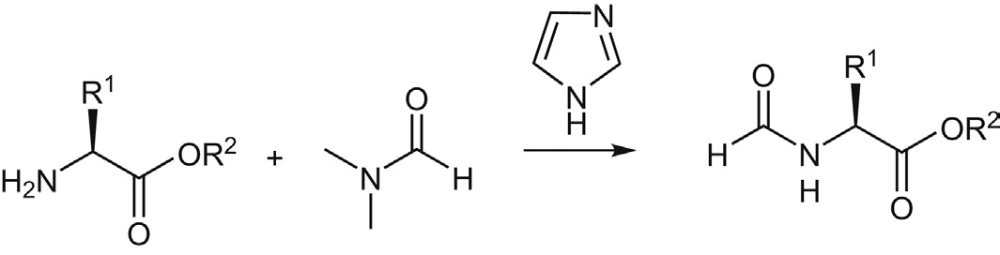
Figure 7.11 咪唑催化氨基酸/氨基酸酯被DMF甲酰化
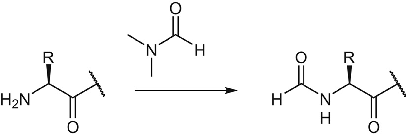
Figure 7.12 Vilsmeier-Haack反应机理
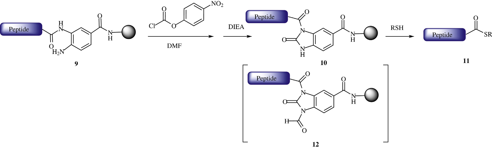
Figure 7.13 肽Nbz衍生物上的甲酰化副反应
N-烷基化是常见副反应，可影响Nα及Lys、Arg、His、Trp侧链。
- Merrifield树脂（氯甲基树脂）上未反应的氯甲基基团 - 在后续SPPS中与游离Nα反应，形成截短序列 - N端Pro尤其容易诱导此副反应
- DBF（9-亚甲基芴）未被哌啶充分淬灭→与游离Nα形成Nα-Fm杂质 - 非亲核碱DBU不能淬灭DBF，只能在连续流系统中使用 - 液相合成中需综合考虑：Fmoc脱除效率和DBF淬灭能力 推荐用二乙胺/二甲胺（高挥发性）或4-AMP/TAEA - 辛硫醇是优良的DBF淬灭剂
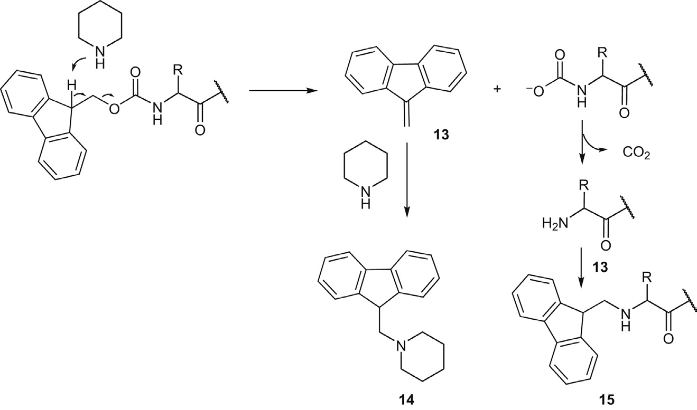
Figure 7.15 Fmoc脱除过程中的Nα-Fm烷基化副反应
- Bpoc酸解脱除：释放2-(4-联苯)异丙基阳离子→N-烷基化 - Boc脱除：基本上不会引起显著的N-叔丁基化 - 但Boc-Lys(Z)的TFA处理可导致： · Lys-Nε脱Z（Nε-de-Z） · Lys-Nε苄基化（Z降解的苄基阳离子） · 可能通过分子内机理进行 → 推荐2,4-二氯苄氧羰基替代Z保护Lys-Nε
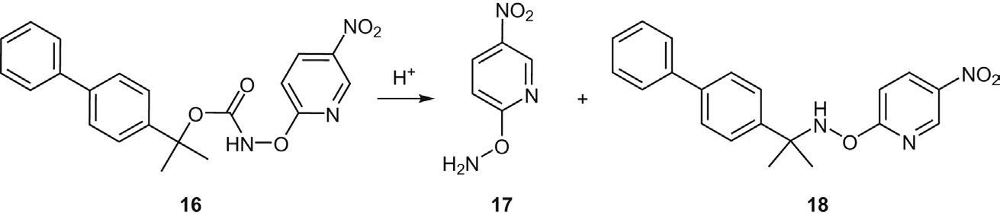
Figure 7.17 TFA处理Boc-Lys(Z)时Nε脱Z和苄基化副反应
甲醛来源：His(Bum/Bom)保护基降解、溶剂杂质（甲醇、PEG） 甲醛修饰的三种类型： 1. N-羟甲基胺形成（+30 Da） 2. 进一步脱水形成亚胺（+12 Da） 3. 通过亚甲基桥交联两个氨基酸 交联模式： - 伯胺（Nα、Lys-Nε）+甲醛→亚胺→与His/Trp/Tyr/Asn/Gln/Arg/Cys交联 - Lys-Nε + Arg-Nδ,ω,ω'：双亚甲基桥交联（+24 Da） - Cys巯基 + Arg胍基：亚甲基桥交联 分子内环化（N端氨基酸特有）： - N端Cys → 噻唑烷（Thz） - N端Trp → 四氢-β-咔啉羧酸 - N端Lys(Nma) → 二氢喹唑啉酮 - N端His → 四氢吡啶-3,4-咪唑-6-羧酸 Eschweiler-Clarke反应：甲醛+甲酸协同→还原胺化→N-甲基化 抑制策略： - 甲醛淬灭剂：Cys·HCl、羟胺化合物（HONH₂·HCl、MeONH₂·HCl） - 交联主要在高pH发生，酸介导的全局脱保护中基本抑制 - 但纯化过程中可能发生（N-羟甲基保护基降解释放甲醛）
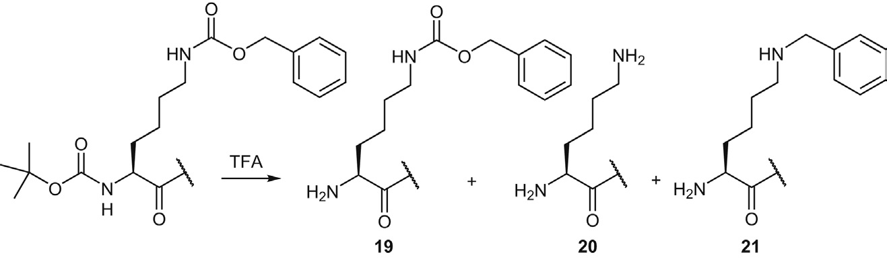
Figure 7.18 胺与甲醛形成N-羟甲基胺和亚胺
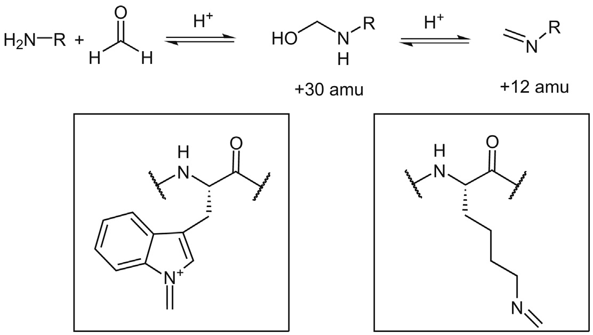
Figure 7.20 甲醛诱导Lys和Arg交联
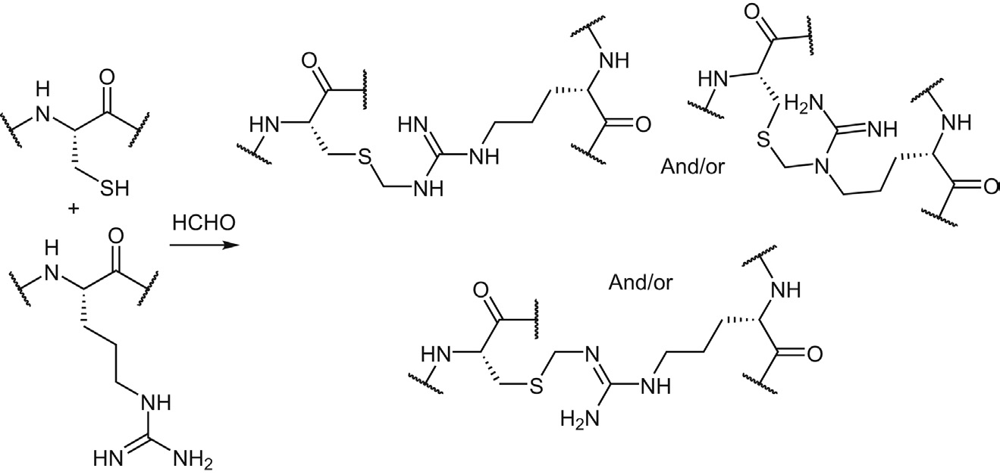
Figure 7.23 甲醛诱导N端Cys/Trp/Lys(Nma)/His交联
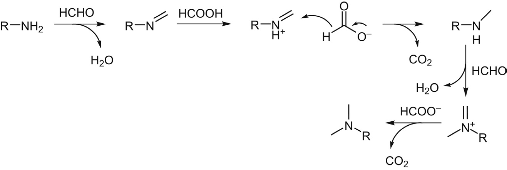
Figure 7.24 Eschweiler-Clarke反应机理
N-Alloc通过Pd(0)/亲核清除剂脱除，但可能引起N-烯丙基化副反应： 机理1：再生氨基与阳离子π-烯丙基钯配合物竞争反应 → 质子化氨基抑制亲核性；大量烯丙基清除剂 机理2：氢化物清除剂形成的烯丙基衍生物→再与胺反应 → 可逆过程 机理3：无清除剂时Pd(0)催化的脱羧-重排→N-烯丙基胺 → 仲胺比伯胺更快；可进一步生成N,N-二烯丙基胺 清除剂类型及效果： 1. 氧型（羧酸、HOSu、HOBt）：效果不佳 2. 氮型（吗啉、吡咯啉、哌啶、NMM）：可用 3. 碳型（dimedone、1,3-二甲基巴比妥酸）：不可逆清除，效果优异 4. 硫型（2-巯基苯甲酸）：可用 5. 硅烷型（N-三甲基硅胺衍生物）：先形成硅烷氨基甲酸酯，避免副反应 但会引起Fmoc过早脱除 6. 氢化物型（PhSiH₃、NaBH₄、NH₃·BH₃）：Pd(0)/PhSiH₃最常用 → 反应快、兼容性好、有效抑制N-烯丙基化
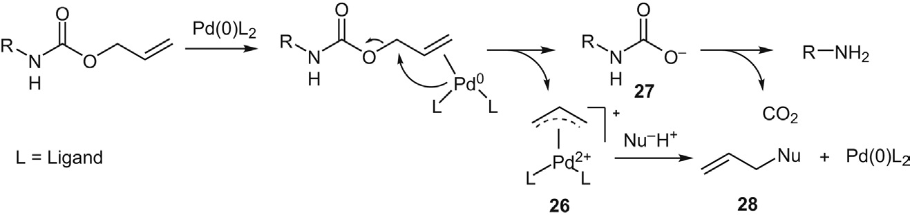
Figure 7.26 Pd(0)催化N-Alloc脱除机理
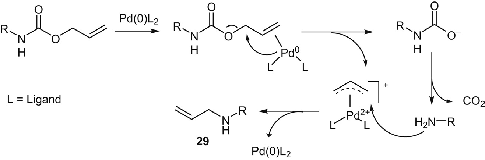
Figure 7.27 游离氨基攻击阳离子π-烯丙基钯配合物的N-烯丙基化
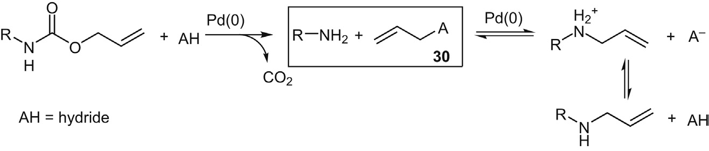
Figure 7.29 Pd(0)催化脱羧-重排形成N-烯丙基胺和N,N-二烯丙基胺
- N端His的咪唑侧链在制备或纯化过程中可发生烯胺化 - 丙酮是常见污染源（工业生产中用作清洁剂） - 反应器清洗不彻底→丙酮残留→修饰N端His的Nim - 产物：His-Nim-(prop-1-en-2-yl)，分子量增加40 Da - 选择性原因不明，可能涉及Nα参与 提醒：N端His肽的工业生产需特别注意清洗和储存
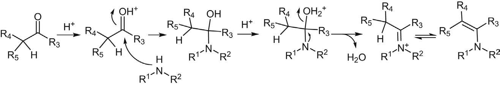
Figure 7.31 丙酮诱导N端His烯胺化
Fmoc-OSu是氨基酸Nα-Fmoc衍生化最常用的试剂，但其中的琥珀酰亚胺基团可引起副反应： 机理： 1. Fmoc-OSu被水或HOSu亲核攻击→中间体32/33 2. 中间体33通过Lossen重排→异氰酸酯34 3. 异氰酸酯与水/HOSu反应→氨基甲酸/氨基甲酸酯→降解为H-β-Ala-OSu 4. 过量Fmoc-OSu将β-Ala衍生化为Fmoc-β-Ala-OSu 5. Fmoc-β-Ala-OSu与未衍生化氨基酸反应→二肽Fmoc-β-Ala-Xaa-OH 6. 同样路径也可生成Fmoc-β-Ala-OH 这是Fmoc-OSu衍生化Fmoc-氨基酸产品的特征性杂质
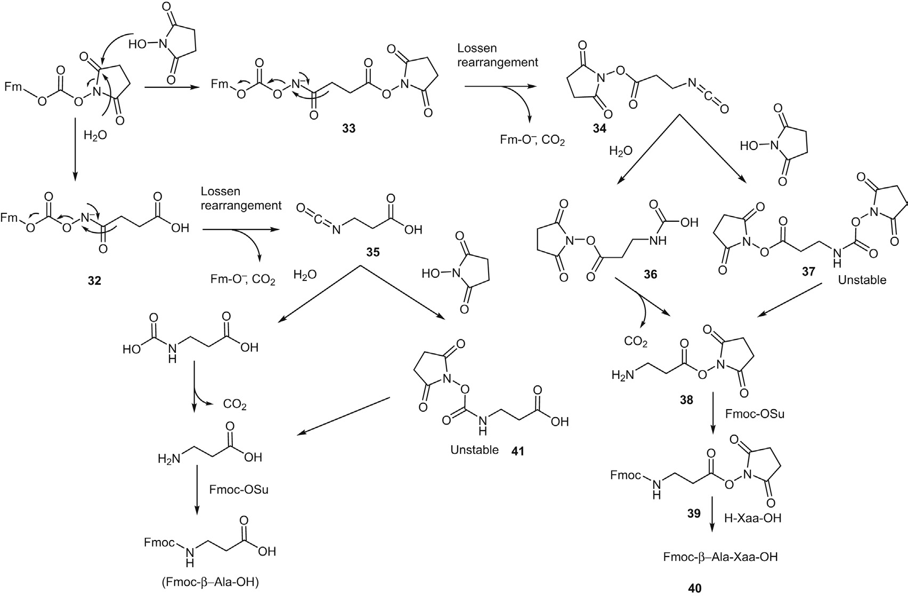
Figure 7.32 Fmoc-OSu介导Nα-Fmoc衍生化中Fmoc-β-Ala-OH/Fmoc-β-Ala-Xaa-OH二肽形成机理
| 副反应类型 | 来源 | 影响 | 主要抑制策略 |
|---|---|---|---|
| Nα-乙酰化 | 残留乙酸酐、His(Tos)介导Ac迁移、原料中乙酸 | 肽链终止（截短序列） | 原料质控、降温、降化学计量、弱碱 |
| Nα-三氟乙酰化 | TFA残留、O→N迁移（树脂/Ser/Thr）、N端Pro敏感 | +96 Da杂质 | 去除TFA（盐交换/中和）、控制时间/温度、Boc-Pro替代Fmoc-Pro |
| Nα-甲酰化 | Trp(For)、甲酸、DMF（降解/转酰胺化/Vilsmeier-Haack） | +28 Da（Trp(For)残留）/ 甲酰化杂质 | DMF→NMP、甲酰淬灭剂、避免甲酸作催化剂 |
| N-烷基化（Fmoc脱除） | DBF未淬灭→Nα-Fm | 肽链终止 | 足量哌啶、DBU仅限连续流、4-AMP/TAEA用于液相 |
| N-烷基化（甲醛/Alloc） | 甲醛交联、Pd(0)催化N-烯丙基化 | 多种修饰和交联产物 | Cys·HCl淬灭甲醛、Pd(0)/PhSiH₃系统、β-双羰基清除剂 |
学习日期：2026-04-12